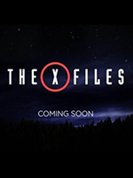

Рик Грайм служил в местной полиции, когда получил тяжелое ранение и попал в больницу в бессознательном состоянии. Главный герой приходит в себя после нескольких дней отключки. Вокруг никого. Он один в тихой палате. Приходится освободиться от оков капельниц и других поддерживающих жизнь аппаратов. Ранение все еще дает о себе знать, но главный герой делает первые шаги после пробуждения. Улицы его родного города, как и больница, оказываются пусты. Однако в переулках появляются странные образы, которые чем-то напоминают людей, но выглядят ужасно: облезлая кожа, гниющее тело и безжалостное желание убить первого встречного. Рик понимает, что в мире произошло что-то ужасное.
Рик Грайм служил в местной полиции, когда получил тяжелое ранение и попал в больницу в бессознательном состоянии. Главный герой приходит в себя после нескольких дней отключки. Вокруг никого. Он один в тихой палате. Приходится освободиться от оков капельниц и других поддерживающих жизнь аппаратов. Ранение все еще дает о себе знать, но главный герой делает первые шаги после пробуждения. Улицы его родного города, как и больница, оказываются пусты. Однако в переулках появляются странные образы, которые чем-то напоминают людей, но выглядят ужасно: облезлая кожа, гниющее тело и безжалостное желание убить первого встречного. Рик понимает, что в мире произошло что-то ужасное.
Бедные и талантливые программисты пытаются добиться огромного успеха. Комедийный сериал, неоднократно номинированный на «Золотой глобус» и «Эмми», рассказывает о жизни молодых гиков, которые пытаются добиться успеха в Силиконовой долине. Работать на большие корпорации — не их удел, поэтому парни планируют создать собственную скромную компанию. Она должна затмить всех конкурентов и стать самым успешным стартапом. «Силиконовая долина» выписывает убедительные типажи современных программистов и по-доброму смеется над особенностями их жизней и карьер.
 Школьный учитель химии Уолтер Уайт узнаёт, что болен раком лёгких. Учитывая сложное финансовое состояние дел семьи, а также перспективы, Уолтер решает заняться изготовлением метамфетамина. Для этого он привлекает своего бывшего ученика Джесси Пинкмана, когда-то исключённого из школы при активном содействии Уайта. Пинкман сам занимался варкой мета, но накануне, в ходе рейда УБН, он лишился подельника и лаборатории.
Школьный учитель химии Уолтер Уайт узнаёт, что болен раком лёгких. Учитывая сложное финансовое состояние дел семьи, а также перспективы, Уолтер решает заняться изготовлением метамфетамина. Для этого он привлекает своего бывшего ученика Джесси Пинкмана, когда-то исключённого из школы при активном содействии Уайта. Пинкман сам занимался варкой мета, но накануне, в ходе рейда УБН, он лишился подельника и лаборатории.

Специальному агенту Дане Скалли, доктору и преподавателю академии ФБР в Вирджинии, поручают работу в паре с агентом Фоксом Малдером над проектом «Секретные материалы», архивом таинственных, нерешенных дел ФБР, которые зачастую связаны с паранормальными явлениями, случаями вампиризма и оборотничества, нападением генетических мутантов, свидетельствами о похищении людей пришельцами...